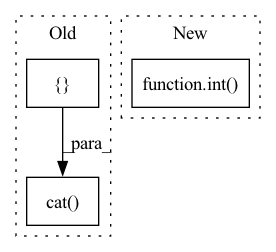

Pattern ID :33829
Before Change
smoothed_error = self.prop1(g, error, post_step=fix_input)
result = y_all + self.scale * smoothed_error[torch.cat([ train_nid, val_nid, test_nid, dim=0) ]
result[result.isnan()] = y_soft[result.isnan()]
return result
After Change
def correct(self, g, y_soft, y_true, mask):
with g.local_scope():
assert abs(float(y_soft.sum()) / y_soft.size(0) - 1.0) < 1e-2
numel = int( mask.sum()) if mask.dtype == torch.bool else mask.size(0)
assert y_true.size(0) == numel
if y_true.dtype == torch.long:In pattern: SUPERPATTERN
Frequency: 4
Non-data size: 3
Instances Fragment ID: 97065801
Project Name: ytchx1999/maxp_dgl_graph
Commit Name: d37a91774ee3295bec58a0ff4c808dbf52f70704
Time: 2021-10-31
Author: 54234005+ytchx1999@users.noreply.github.com
File Name: SAGN_with_SLE/src/models.py
M Class Name: CorrectAndSmooth
N Class Name: CorrectAndSmooth
M Method Name: correct(5)
N Method Name: correct(8)
M Parent Class: nn.Module
N Parent Class: nn.Module
M File Name: SAGN_with_SLE/src/models.py
N File Name: SAGN_with_SLE/src/models.py
M Start Line: 461
M End Line: 494
N Start Line: 636
N End Line: 661
Before Change
y_true = F.one_hot(y_true.view(-1), y_soft.size(-1)).to(y_soft.dtype)
y_all = torch.zeros(size=(n_nodes, y_soft.size(1))).to(y_soft.device)
y_all[torch.cat([ train_nid, val_nid, test_nid, dim=0) ] = y_soft
y_all[train_nid] = y_true
return self.prop2(g, y_all)[torch.cat([train_nid, val_nid, test_nid], dim=0)]After Change
def smooth(self, g, y_soft, y_true, mask):
with g.local_scope():
numel = int( mask.sum()) if mask.dtype == torch.bool else mask.size(0)
assert y_true.size(0) == numel
if y_true.dtype == torch.long: Fragment ID: 97065803
Project Name: ytchx1999/maxp_dgl_graph
Commit Name: d37a91774ee3295bec58a0ff4c808dbf52f70704
Time: 2021-10-31
Author: 54234005+ytchx1999@users.noreply.github.com
File Name: SAGN_with_SLE/src/models.py
M Class Name: CorrectAndSmooth
N Class Name: CorrectAndSmooth
M Method Name: smooth(5)
N Method Name: smooth(8)
M Parent Class: nn.Module
N Parent Class: nn.Module
M File Name: SAGN_with_SLE/src/models.py
N File Name: SAGN_with_SLE/src/models.py
M Start Line: 498
M End Line: 510
N Start Line: 667
N End Line: 674
Before Change
apool = torch.mean(conv_features, dim = 1) // (N, block_num, embed_dim * 0.5)
mpool, _ = torch.max(conv_features, dim = 1) // (N, block_num, embed_dim * 0.5)
imgs_embed = torch.cat([ apool, mpool, dim = 2) // (N, block_num, embed_dim)
words_embed = self.__content_embed__(input_ids) // (N, seq_len, embed_dim)
indices = torch.arange(self.seq_len + self.block_num).expand(batch, -1).to(device)After Change
h = self.__hidden_layers__[i](h)[0]
h[:, :self.block_num, :] = imgs_embed + position_embed[:, :self.block_num, :]
preds = self.__fc_layer__(self.dropout(self.__layer_norm__(h[:, int( self.block_num + self.tags_num) :, :]))) // (N, seg_len, vocab_dim)
return preds
Fragment ID: 97065805
Project Name: siwooyong/codalab-microsoft-coco-image-captioning-challenge
Commit Name: d24b22ec9f0be1acd2f307be20ec85f84f8d8795
Time: 2021-07-08
Author: 68500343+yongsiwoo@users.noreply.github.com
File Name: models/base_model.py
M Class Name: decoder
N Class Name: decoder
M Method Name: forward(4)
N Method Name: forward(3)
M Parent Class: nn.Module
N Parent Class: nn.Module
M File Name: models/base_model.py
N File Name: models/base_model.py
M Start Line: 57
M End Line: 74
N Start Line: 75
N End Line: 97
Before Change
// src_points = src_points[mask]
// batch_indices = batch_indices[mask]
// sample points
keypoints_list = []
for bs_idx in range(batch_size):
bs_mask = (batch_indices == bs_idx)
sampled_points = src_points[bs_mask].unsqueeze(dim=0) // (1, N, 3)
// sample points with FPS
cur_pt_idxs = pointnet2_stack_utils.furthest_point_sample(
sampled_points[:, :, 0:3].contiguous(), self.model_cfg["num_keypoints"]
).long()
if sampled_points.shape[1] < self.model_cfg["num_keypoints"]:
empty_num = self.model_cfg["num_keypoints"] - sampled_points.shape[1]
cur_pt_idxs[0, -empty_num:] = cur_pt_idxs[0, :empty_num]
keypoints = sampled_points[0][cur_pt_idxs[0]].unsqueeze(dim=0)
keypoints_list.append(keypoints)
keypoints = torch.cat( keypoints_list, dim=0) // (B, M, 3)
return keypoints
def forward(self, batch_dict):After Change
sampled_points = src_points[bs_mask].unsqueeze(dim=0) // (1, N, 3)
// sample points with FPS
// some cropped pcd may have very few points, select various number of points to ensure similar sample density
num_kpts = int( self.model_cfg["num_keypoints"] * sampled_points.shape[1] / 50000) + 1 // 50000 is approximately the number of points in one full pcd
num_kpts = min(num_kpts, self.model_cfg["num_keypoints"])
cur_pt_idxs = pointnet2_stack_utils.furthest_point_sample(
sampled_points[:, :, 0:3].contiguous(), num_kpts Fragment ID: 97065807
Project Name: derrickxunu/opencood
Commit Name: c7ecf237666697c93ad84b5d271c16e133ac8ccb
Time: 2022-04-01
Author: yunshuang.yuan@ikg.uni-hannover.de
File Name: opencood/models/sub_modules/vsa.py
M Class Name: VoxelSetAbstraction
N Class Name: VoxelSetAbstraction
M Method Name: get_sampled_points(2)
N Method Name: get_sampled_points(2)
M Parent Class: nn.Module
N Parent Class: nn.Module
M File Name: opencood/models/sub_modules/vsa.py
N File Name: opencood/models/sub_modules/vsa.py
M Start Line: 143
M End Line: 161
N Start Line: 124
N End Line: 167